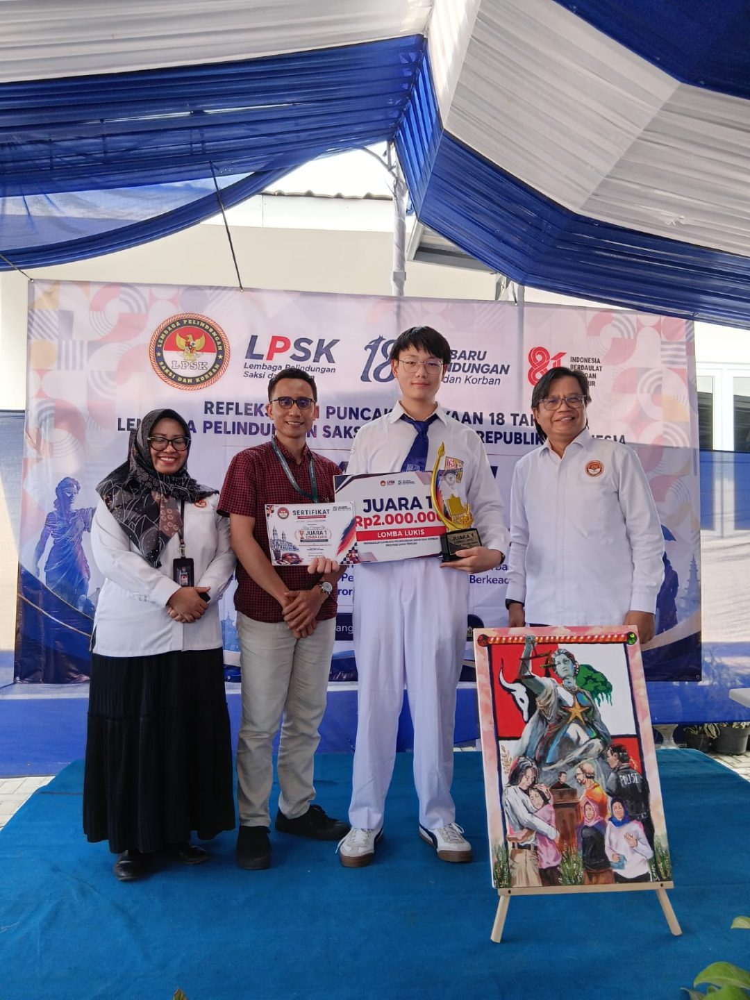
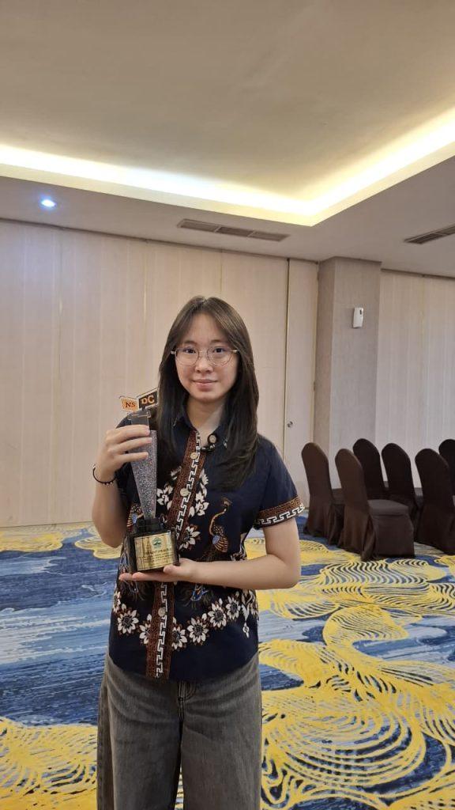

Juara 1 Lomba Lukis LPSK Jawa Tengah
SMA Kolese Loyola kembali mengukir prestasi membanggakan di bidang seni rupa. Kenzo Ebeneezer Yu, siswa kelas XII SMA Kolese Loyola, berhasil menyabet Juara I dalam ajang Lomba Lukis yang diselenggarakan oleh Perwakilan Lembaga Perlindungan Saksi dan Korban (LPSK) Jawa Tengah. Kompetisi yang berlangsung pada Minggu, 9 Agustus 2026 ini bertempat di Kantor Perwakilan LPSK Jawa Tengah. Mengusung tema “LPSK: Perlindungan Saksi dan Korban, Menghadirkan Keadilan bagi Semua”, Kenzo mampu menerjemahkan gagasan tentang pentingnya rasa aman, perlindungan hukum, dan penegakan keadilan bagi masyarakat ke dalam sebuah karya visual yang sarat makna dan bernilai estetis tinggi.

Juara 2 Lomba Debat Indonesia (LDI) Bahasa Inggris tingkat Provinsi
Chloe Jocelyn Santoso (XI-F/8) berhasil meraih juara 2 Lomba Debat Indonesia (LDI) Bahasa Inggris tingkat Provinsi pada Kamis, 4 Juni 2026 dan sekaligus menjadi perwakilan Provinsi Jawa Tengah di tingkat nasional. Pendamping: MGBS Bahasa Inggris.

Juara 1 dan 3 Pada Lomba Peneliti Belia (LPB) di PUTech
SMA Kolese Loyola kembali mengukir prestasi membanggakan di bidang seni rupa. Kenzo Ebeneezer Yu, siswa kelas XII SMA Kolese Loyola, berhasil menyabet Juara I dalam ajang Lomba Lukis yang diselenggarakan oleh Perwakilan Lembaga Perlindungan Saksi dan Korban (LPSK) Jawa Tengah. Kompetisi yang berlangsung pada Minggu, 9 Agustus 2026 ini bertempat di Kantor Perwakilan LPSK Jawa Tengah. Mengusung tema “LPSK: Perlindungan Saksi dan Korban, Menghadirkan Keadilan bagi Semua”, Kenzo mampu menerjemahkan gagasan tentang pentingnya rasa aman, perlindungan hukum, dan penegakan keadilan bagi masyarakat ke dalam sebuah karya visual yang sarat makna dan bernilai estetis tinggi.